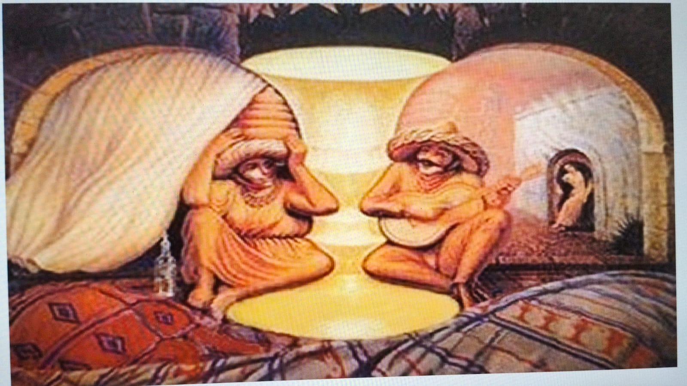

Olhos que Veem, Física que Explica
Uma investigação interdisciplinar sobre visão, luz e percepção humana.
Sobre o Projeto
O projeto investiga a relação entre os fenômenos da Física, o funcionamento do olho humano e o processamento da percepção pelo cérebro. Pretende compreender a propagação e refração da luz, acuidade visual, cores e ilusões de óptica presentes no cotidiano.
Objetivos Principais
- Compreender a importância da luz na formação de imagens.
- Investigar o funcionamento do olho, córnea, cristalino e retina.
- Relacionar a refração da luz às lentes corretivas (miopia, hipermetropia, astigmatismo).
- Analisar como o cérebro processa cores e interpreta ilusões ópticas.
Etapas do Projeto & Curiosidades

1. Anamnese Visual
Mapeamento dos hábitos visuais dos estudantes, uso de telas e histórico de consultas oftalmológicas[cite: 1].
Nota: Atividade educativa sem caráter de diagnóstico médico[cite: 1].
2. Acuidade Visual & Tabela de Snellen
Estudo do tamanho angular e distância. Descubra o significado do padrão 20/20!
Curiosidade: Visão 20/20 indica que você enxerga a 20 pés (aprox. 6 metros) o que uma pessoa com visão padrão deveria enxergar a essa distância.

3. Refração e Lentes
Experimentos práticos com lápis na água, prismas e desvio da luz.
Curiosidade: A ilusão do lápis "quebrado" no copo d'água ocorre porque a luz muda de velocidade ao passar do ar para a água!

4. Ilusões de Óptica
Análise de figuras ambíguas e imagens em movimento. Por que o cérebro interpreta diferente do que o olho capta?

5. "Qual é a Cor?"
Experimentos com o Disco de Newton, decomposição da luz branca e filtros de cor.
Curiosidade: Um objeto vermelho não "possui" a cor vermelha em si; ele reflete a luz vermelha e absorve as demais cores da iluminação!

6. "Semáforo Inteligente"
Simulador de Robótica - Tinkercad
Curiosidade: Simulador que agiliza o produto final!
Desafio de Percepção: Efeito Stroop
Tente dizer a COR DAS LETRAS em voz alta (e não o texto escrito) o mais rápido que puder:
O cérebro tende a ler a palavra antes de identificar a cor do texto, gerando uma competição cognitiva!
Corpo Docente Responsável
- Professor de Programação: Prof. Marcio Borzuk
- Professora de Física e Tecnociência: Prof. Judith
- Professor de Robótica: Prof. Kleber